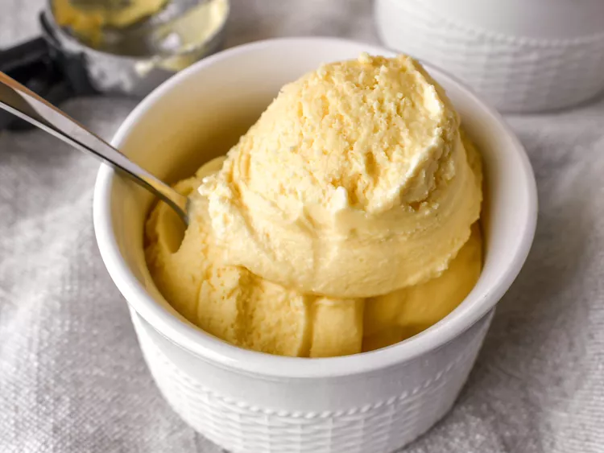

Home
Gelato Recipe

Italian Gelato
Gelato made with cream, milk, egg yolks, and sugar. This basic recipe is from my Italian mother-in-law and is perfect to use as a base for your favorite flavors. Try adding vanilla, shaved chocolate, or your favorite fruits. They're all delicious!
Ingredients
- 2 cups of milk
- 1 cup heavy cream
- 4 egg yolks
- 1/2 cup sugar
Steps
- Gather the ingredients.
- Mix milk and cream in a medium saucepan. Warm until foam forms around the edges. Remove from heat.
- Beat egg yolks and sugar until frothy in a large bowl. Gradually pour warm milk into egg yolks and sugar, whisking constantly. Return mixture to saucepan; cook over medium heat, stirring with a wooden spoon until the mixture gels slightly and coats the back of the spoon. If small egg lumps begin to show, remove from heat immediately.
- Pour the mixture through a sieve or fine strainer into a bowl. Cover, and chill for 2 hours to overnight.
- Pour the mixture into an ice cream maker, and freeze according to the manufacturer's instructions. Transfer to a sealed container, and freeze until firm, at least 2 hours.